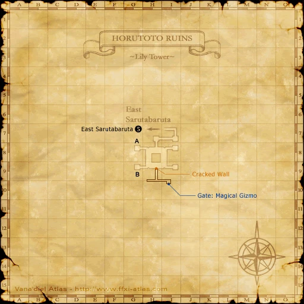
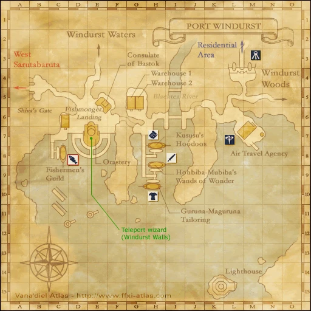
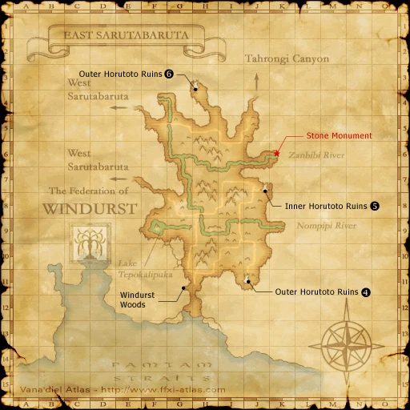
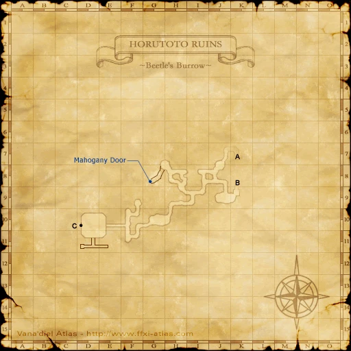
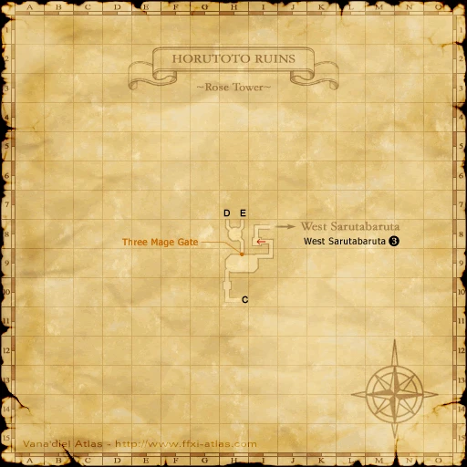
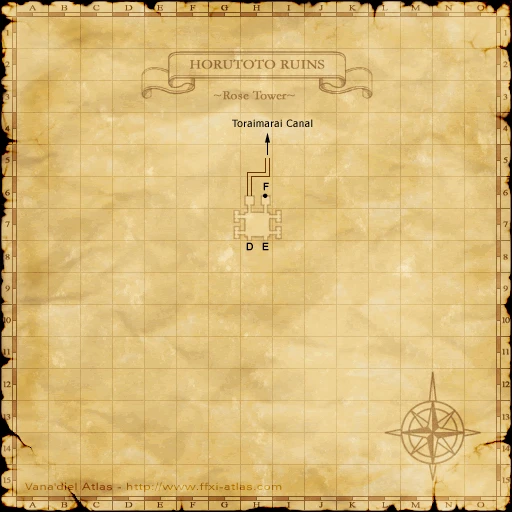

Before you begin
Windurst allegiance and Rank 1. Accept the mission before visiting the Orastery.
Walkthrough
- Accept the mission from a Windurst guard, then meet Hakkuru-Rinkuru at the Orastery in Port Windurst (E-7).
- Enter Lily Tower in East Sarutabaruta (J-7). In Inner Horutoto Ruins, pass the cracked wall at (H-9) and examine the Gate: Magical Gizmo at (I-10).
- Search the six Ancient Magical Gizmos at G-8, G-9, H-8, H-9, I-8 and I-9 until you obtain the Cracked Mana Orb.
- Return to Hakkuru-Rinkuru.
Locations and references
| Place / NPC | Location | Reference |
|---|---|---|
| Hakkuru-Rinkuru | Port Windurst (E-7) | Location reference |
| Lily Tower | East Sarutabaruta (J-7) | Location reference |
Route maps





Completion and reward
Rank Points
Area maps
Open a zone below, then select a map to enlarge it. Match the named floors and grid coordinates in the steps; these are reference area maps, not a live position tracker.
Port Windurst


East Sarutabaruta


Inner Horutoto Ruins










References
HorizonXI Wiki: Windurst 1-1 · LandSandBoat mission definition
The route summary covers the original story. Other servers’ extra rewards, level-cap settings and Trust rules are not promises of Zenith behavior. Confirm battlefield entry conditions in game.
Additional level-75 reference
| Mission Name | The Horutoto Ruins Experiment |
| Number | 1-1 |
| Start NPC | Any Windurst Gate Guard |
| Requirements | --- |
| Suggested Level | 10 |
| Items Needed | --- |
| Repeatable | No |
| Title Granted |
- New "Best of the West" Recruit |
| Reward | Rank 1-2, Rank Points |
| ← Previous Mission | Next Mission → |
| None | The Heart of the Matter |
| Replay Cutscenes | |
| The Horutoto Ruins Experiment | Tonule - Port Windurst (B-5) |
| The Horutoto Ruins Experiment | Goblin Footprint - Inner Horutoto Ruins (I-7) |
Walkthrough
- After accepting the mission, go to the Orastery in Port Windurst and talk to Hakkuru-Rinkuru (E-7) for a cut scene.
- Head to East Sarutabaruta and go to the entrance to the Inner Horutoto Ruins at (J-7).
- OPTIONAL: Before entering, talk to Sama Gohjima, who is standing before the entrance.
- Upon entering the Ruins, you will be in the Lily Tower (Map 1). Go down the stairs until you come to the main room.
- Circle around the room and look for the crack in the center of the south wall at (H-9) (if you see dirt instead of brick floors, you've taken the wrong cracked wall opening).
- Enter and go left. Click on the door at (I-9) to watch another cut scene with the Minister.
- Next, search the six different Ancient Magical Gizmos until you find the Cracked Mana Orb. The Cracked Mana Orb will be at a random Ancient Magical Gizmo.
- Take the key item you received back to Hakkuru-Rinkuru in the Orastery to complete the mission.
Game Description
- Mission Orders
- The minister of the Orastery in conducting an experiment in the eastern magic tower of the Horutoto Ruins, located in East Sarutabaruta. Inquire at the Orastery first, then go assist him.
Adapted from Eden Wiki: The Horutoto Ruins Experiment · Contributors and history · CC BY-SA 4.0. Revision 2315. Layout, links and optional background text adapted for Zenith.